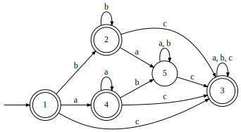
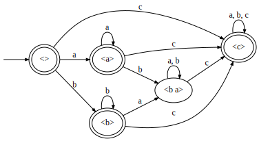
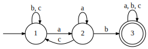
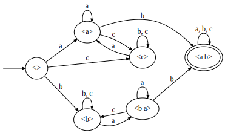

In previous sessions, we’ve discussed the regular and star-free classes at the top of our finite-strucure hierarchy, and the trivial languages (𝟏) and extensions thereof at the bottom.
A variety 𝐕 of semigroups (or monoids) is a collection satisfying the following:
These properties mean that any class of languages defined by having their syntactic monoids belong to some variety 𝐕 must necessarily be closed under the Boolean operations. The union and intersection are computed by
The first step produces some automaton, the second removes unreachable states, and the third merges those that remain to give us something minimal again. Using the Nerode relation instead of the Myhill relation would yield a canonical DFA, but that might not be a monoid.
So this gives us closure under union and intersection. The fact that a language and its complement share the same monoid gives us closure under complementation. That’s all of the Boolean operations.
If you have a class of languages and you add restrictions, you get a subclass. Or if you remove restrictions, you get a superclass. Recall that a monoid is in 𝟏 iff it has just a single element, denoted 1. There’s only one such monoid, corresponding to two languages: Σ* and ∅. This monoid has the following properties:
The class 𝐋𝟏 is a superclass of 𝟏 because rather than requiring the whole monoid to be in 𝟏, we only require its local subsemigroups 𝑒𝑆𝑒 to be in 𝟏. This is a relaxation of some properties. But we might also just decide to remove some from the above list. If we keep only the commutative and idempotent properties, we have a semilattice! That’s not a profound theorem or anything by the way, just the definition of what a semilattice is.
Here is a sample language whose monoid is a semilattice:

Its syntactic monoid is actually the same shape:

| ⋅ | λ | a | b | ba | c |
|---|---|---|---|---|---|
| λ | λ | a | b | ba | c |
| a | a | a | ba | ba | c |
| b | b | ba | b | ba | c |
| ba | ba | ba | ba | ba | c |
| c | c | c | c | c | c |
Inspecting the main diagonal, each element is idempotent. But also, this main diagonal is a mirror; the monoid is commutative. Commutative and idempotent, it’s a semilattice.
What does it mean for a language to be commutative and idempotent? Consider two words: “abacab” and “bacba”.
Semilattices form a variety. So we can construct a “locally-” extension and a tier-based extension of that. “Locally a semilattice” turns out to be the same as “locally testable”, so we’ll denote it as such: LT.
This is the DFA for the language in which all words contain “ab”:

Its syntactic monoid is as follows:

| ⋅ | λ | a | b | c | ba | ab |
|---|---|---|---|---|---|---|
| λ | λ | a | b | c | ba | ab |
| a | a | a | ab | c | a | ab |
| b | b | ba | b | b | ba | ab |
| c | c | a | c | c | a | ab |
| ba | ba | ba | ab | b | ab | ab |
| ab | ab | ab | ab | ab | ab | ab |
Notice that ba is not an idempotent, so this language isn’t in 𝐂𝐁. (It also lacks commutativity.) But let’s find 𝑒𝑆𝑒, remembering to exclude the empty string because we are in the semigroup and not the monoid. Recall that 𝑒 is an idempotent, 𝑒𝑆 is everything reachable from it in the graph, and 𝑒𝑆𝑒 is the set you get when multiplying each element of 𝑒𝑆 by 𝑒:
| 𝑒 | 𝑒𝑆 | 𝑒𝑆𝑒 |
|---|---|---|
| a | {a, c, ab} | {a, ab} |
| b | {b, ba, ab} | {b, ab} |
| c | {a, c, ab} | {c, ab} |
| ab | {ab} | {ab} |
And of course if we draw in self-loops everywhere on some new symbol d, then we have something tier-based locally testable, TLT.
For any given variety 𝐕, there is a corresponding “locally” class 𝐋𝐕 and a tier-based extension of that, 𝐓𝐋𝐕. The 𝐋𝐕 is also a variety, but 𝐓𝐋𝐕 is not, as the latter is not closed under products. In the table below, inclusions hold downward and leftward.
| 𝐕 | 𝐋𝐕 | 𝐓𝐋𝐕 |
|---|---|---|
| Reg | ||
| SF | ||
| 𝐂𝐁 | LT | TLT |
| 𝟏 | GD | TGD |
If we haven’t mentioned it yet, the variety of finite monoids (what regular languages are) is called 𝐅𝐢𝐧, and the aperiodic ones (for star-free) are 𝐀𝐩. Note: there is a language class called Fin, which should not be confused with the monoid variety 𝐅𝐢𝐧.